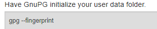
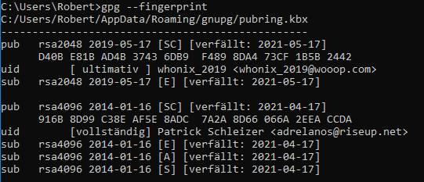
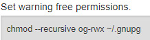
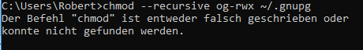
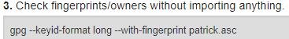

Hallo everyone,
OS: Windows 10
the reason I opened this support request is that the verification of whonix was just explained for whonix.EXE (Workstation and Gateway) but now all the files are put together into 1 file. Nowhere can I find an in depth verification step by step for the whonix.OVA file.
1. The two things I already completed:
I downloaded all files how you can see (sorry it’s in German):
{kind=link}
I verified the key of “Patrick Schleitzer” together with a key I created myself:
{kind=link}
“beglaubigt” means “verified”.
2. How do I verify the .OVA file(s)?
Now I’m totally overwhelmed. I am a complete cmd.exe and powershell newbie!
Please explain everything to me like you would to a child.
The image below is made from the following link:
{kind=link}
I highlighted things with red I have not yet done. Which way do you recommend - Command lines or Kleopatra?
For the command line stuff I have the following link:
When I do this:

I get this:

When I do this (what do they mean with “~”?):

I get this:

It says: “command “chmod” either wrong or written the wrong way or couldn’t be found”
I get the same error return when I do this:

There is another command line support page:
{kind=link}
So when I do the first thing I get:
{kind=link}
It says: “syntax for this file name, index name or hard drive designation. Command “GPG” ist either spelled the wrong way or could not be found”
Copying the whole whonix-stuff to hard drive C: did not make any difference.
{kind=link}
This command line stuff is really getting to my nerves now. Could you please help me!
Best regards
Robert
Summary
This text will be hidden